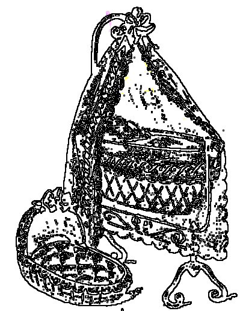

An amzer dremenet
Ton
KENTAÑ MELINER
1. Bretoned, savomp ur gentel
Diwar-benn paotred Breizh-Izel
Deut da glevet, da glevet, gwitibunan
Deut da glevet, da glevet ar c'han.-
2. Paotred Breizh-Izel o deus graet
Ur c'havell koant hag eñ treset.
- Deut da glevet, etc.
3. Ur c'havell kaer karn olifant,
Warnañ tachoù aour hag arc'hant.
4. Tachoù aour hag arc'hant warnañ,
A luskellont gant nec'h bremañ.
5. Ha bremañ, oc'h e luskellat,
Daeloù ver eus o daoulagad.
6. Daeloù a ver, daeloù c'hwerv :
Neb a zo ennañ zo marv
7. Zo marv, zo marv pell zo,
Hag i luskell, o kanañ 'to,
8. Hag i luskell, luskell atav,
Kollet ar skiant-vat ganto.
9. Ar skiant-vat o deus kollet ;
Kollet o deus joaioù ar bed.
10. N'eus er bed evit ar Breton
Nemet nec'h ha poanioù kalon ;
11. Nemet nec'h ha poanioù spered
Pa soñj d'an amzer dremenet.
EIL MELINER
12. En amzer gozh, na welec'h ket,
O vale dre-mañ laboused
13. kozh-laboused c'hlas ar gwirioù
Sonn o fenn ha bras o c'henou.
14. Ne oa er vro gwirioù nikun,
Na war hoalen, na war vutun.
15. Butun hag hoalen a goust ker,
Na gouste, gwechall, an hanter.
16. Gwechall na welec'h d'an dachenn
O redek ar valtouterien
17. O redek, evel ar c'helien,
Ouzh c'hwezh ar chistr d'ar varrikenn.
18. Gwir a zo war bep barrikenn,
Met war hini ar sonerien.
KENTAÑ PILHAOUER.
19. Na gasec'h ket, amzer gwechall,
Hon tud yaouank d'ar broioù all,
20. D'ar broioù all, - ho ! - da vervel,
Pell, siwazh ! eus a Vreizh-Izel !
KENTAÑ LABOURER.
21. E Breizh-Izel er manerioù
Oa tud vat o tifenn ar vro;
22. Bremañ, penn-an-daol, e weler,
Neb a vire saout ar maner,
23. Er maner, pa oa un den paour,
N'hel loskec'h ket pell toull an nor ;
24. An itron vat, o vont d'an arc'h,
Diskarge bleud kerc'h leizh e sac'h ;
25. Boued a roe d'an neb en doa naon,
Ha louzoù d'an neb a oa klañv.
26. Boued na louzoù mui na roer,
Re baour a dec'h ouzh ar maner ;
27. Penn-izel, a dec'h an dud paour,
Gant aon ar c'hi e toull an nor,
28. Gant aon ar c'hi p'ini a lamm
Gant ar c'houer ha gant e vamm.
EIL LABOURER.
29. Ar bloaz oe ma mamm intañvez,
Oe d'am mamm ur gwall vloavezh.
30. Be'z he doa nav a vugale,
Ha n'he doa bara da reiñ d'he.
31. An neb en deus, hennezh a rei,
Mont a ran d'e gavout, eme'i ;
32. Da gavout an den divroet :
Doue r'hen dalc'ho e yec'hed !
33. - Yec'hed deoc'h, aotrou an ti-mañ,
Deut on amañ da c'hout un dra ;
34. Da c'hout hag-eñ deoc'h a blijfe
Reiñ un tamm boued d'am bugale ;
35.Boued d'am nav a vugaligoù
N'eus-int bet, tri deiz zo, aotrou.-
36. An divroad a respontas
D'am mamm baour kent ha m'he c'hlevas :
37. - Kerzh alese, deus treuz va zi,
Pe me laosko warnout va c'hi.-
38. Gant aon ar c'hi, kuit a eas,
O c'houelañ a-hed an hent bras.
39. An intañvez baour a ouele :
- Petra roin-me d'am bugale ?
40. D'am bugale petra roin-me
Pa larint : «mamm, naon am eus-me !»
41. Na wele ket he hent ervat,
Gant an daeloù en he lagad.
42. En hanter-hent pa oe digouet,
An aotrou kont he deus kavet ;
43. Aotrou kont maner Pratuloc'h,
O vont da heizal da Goatloc'h ;
44. O vont da Goatloc'h da heizal,
Hag hen pignet war e varc'h geal.
45. - Va c'hregig vat, din leveret,
Perak 'ta, perak a ouelet ?
46. - Gouelañ ran war ma bugale,
N'am eus ket bara da roiñ d'he.-
47. - Va c'hregig, n'eo ket ret gouelañ -
Dalit argant - it da brenañ.-
48. Bennoz Doue d'an aotrou kont !
Seurt-se a zo tud, me respont !
49. Pa vo ret din mont d'ar marv,
Me yei evitañ, pa garo.
TREDE LABOURER.
50. Seurt-se zo tud a galon vat,
Pere a glev ouzh a peb stad ;
51. Pere a glev ouzh a bep stad ;
Pere d'an holl dud a zo mat.
PEVARE LABOURER.
52. Zo mat d'al labourerien gaezh,
Ha n'o lakafe ket er-maez ;
53. Er-maez 'vel ar vistri nevez,
Gant c'hoant da greskiñ o leve ;
54. O leve ; hep soñjal neb ra,
Er bed all, sur, e nebeuta.
PEMPVET LABOURER.
55. N'eo ket seurt-se lak da werzhañ
Gwele ur merour gant e dra.
EIL PILHAOUER.
56. N'eo ket seurt-se a lak paeañ
Daou skoed d'ur c'hreg o klask bara
57. Daou skoed evit pezh a beuras
He buoc'h lec'h eas a-holl-viskoazh.
TREDE PILHAOUER.
58. N'eo ket seurt-se 'zifenn sersal ;
Pa eont d'ar c'hoad, i c'halv re all.
C'HWEC'HVET LABOURER.
59. N'eo ket seurt-se nac'hfe un dle ;
Ur skrid, avat, a dalv o le.
60. N'int-o ket klañv gant al lorgnez -
Nemet an dudjentil nevez.
SEIZHVET LABOURER.
61. An dudjentil nevez zo kriz ;
Gwell a oa re gozh da vistri.
62. Re gozh, evito da vout taer,
A gar, a galon, ar c'houer.
63. Hogen re gozh, siwazh d'ar bed !
N'int ket mui ker stank ha ma int bet.
64. Stankoc'h e gaver debrerien
Evit an dud mat d'ar beorien.
TREDE PILHAOUER.
65. Ar beorien a vo paour atav,
Ha re ker atav o debro.
KENTAÑ MELINER.
66. Atav ! koulskoude oe laret.
«Fallañ douar ar gwellañ ed
67. Ar gwellañ ed, pa deuy en-dro
Ar roueoù gozh, da renañ 'r vro. »
68. Ar roueoù kozh zo distroet,
An amzer gozh n'en deus ket graet.
69. An amzer gozh na deuy ket mui ;
Trubardet omp, siwazh deomp-ni !
70. Siwazh deomp ! trubardet omp bet !
En douar fall, 'mañ fall an ed.
71. Gwasoc'h-gwazh, krisoc'h-kriz ar bed
Diskiant eo neb n'her gwel ket.
72. Diskiant neb eas da grediñ
E teuy da c'houlmed ar vrini
73. Da grediñ e vleunio biken
Lilioù war gwrizioù raden
74. Neb a eas da grediñ a gouez
An aour melen deus beg ar gwez.
75. Deus beg ar gwez na gouez netra,
Nemet an delioù sec'h na ra ;
76. Nemet an delioù sec'h na gouez,
Da ober lec'h d'ar re nevez.
77. Nemet an delioù melen aour,
Da ober gwele d'an dud paour.
78. En em gonfortet, peorien geizh,
Gweleoù pluñv ho po un deiz ;
79. C'hwi po, e-lec'h gwele gwial,
Gwele olifant er bed-all.
EIL MELINER.
80. Savet eo bet ar gentel-mañ
Da c'houel Maria, goude koan -,
81. Savet eo bet gant daouzek den,
En ur zañsal war an dachenn:
82. Tri glask pilhoù, seizh had segal,
E valañ flour a ra 'n daou all.
- Ha setu graet, setu graet, gwitibunan ;
Ha setu graet, setu graet ar c'han -
Extraits du carnet de collecte N°2 de La Villemarqué
Excerpts from La Villemarqué's 2nd collecting book

CARNET 2: NOTES EN MARGE
p. 41 / 21
[en bas de page]
[A la suite de "Goulennou evit ur plac'h" (demande en mariage):]
"Demander sur le même sujet, en Gourin, PICHON, meliner [=meunier] au village de Kerbiket,
c'est
le même qui a chanté au pardon du PORZOU -"
[Cette remarque vise à l'évidence le "1er meunier" du présent chant. Ces notes non destinées à être publiées sont sans doute sincères. La création quasi-spontanée de la gwerz décrite dans l'argument qui le précède dans le Barzhaz (1845) et qui résume les convictions politiques de son éditeur, repose donc sur un fond de vérité!
Pichon est
"un maître meunier qu'on [lui] dit être le plus célèbre chanteur de noces des montagnes"]
********************
p. 69 / 36
Kañvou [Deuil]
(Son dans) [Chanson à danser]
1. Bretoned, savomp ur gentel,
Diwar-benn paotred Breizh-Izel.
2. Paotred Breizh-Izel o-deus graet
Ur c’havell a goad sec'h hag eñ treset.
3. Graet hen o-deus a goad rouan,
A goad sec'h, gant tachoù arc'hant.
4. Gant tachoù arc'hant hag eñ splann,
Ha gant an nec'h hel luskell bremañ :
5. Bremañ pa ean d'hel luskellat,
'Ver an daeroù d'eus o daoulagad.
6. O daoulagad a skuilh daeroù:
Hini zo e-barzh zo marv.
[En marge, à droite, verticalement]
7. Hini zo 'barhz a zo marv;
Hag hel luskellat ' reont atav.
8. Atav a reont d'hel luskellat
Kollet gante o skiant-vat.
9. O skiant-vat o-deus kollet.
Kollet o-deus joaioù ar bed.
(p.42)
a. Ar bed a gemer ur stumm fall.
N'eus tra d'eus pezh a oa gwechall;
(p.40)
[Le monde prend mauvaise tournure / Il n'est plus ce qu'il était jadis
The world takes a bad turn / It's no more what it used to be]
********************
[Noté après "Paotred Logivi"]
10. N'eus mui er bed d'ar Vretoned
'Met anken ha kañv diremed.
11. Med anken ha keuz o soñjal,
O soñjal d’an amzer gwechall.
********************
p. 93
[Noté après "Tournée de l'Eginané", autre encre]
[en bas de page, précédé du repère (3)]
19. Ne ' gased ket amzer gwechall
An dud yaouank e broioù all,
20. E broioù all evit mervel
Pell eus o c'herent ha bugel.
[en marge à gauche verticalement:]
15. Butun hag holen a goust ker:
Ne gouste gwechall an-hanter.
[Strophes utilisées pour "Amzer dremenet"]
37. Kit alese! Kit alese!
35. Ni a zo nav a vugale
Hag ur wreg dall da vagañ ivez.
50. Aotrou
[Jegou]
Du Laz zo 'n ozhac'h mat,
Met an Itron e-tal er-vat,
E-tal ervat, kenkoulz er ger
Hag er marc'had arboeller.
51. Entent ar re d'eus-a bep stad
Ha d'ar paour e daol evezh mat..
[2 str. ressemblent aux str.20 et 21 de "Nominoé"]
********************
p. 110
[Noté après "Aliedik Ar Palafré" et "Le Tailleur"
en bas de page]
23. Er maner (gwechall) pa ' zeue un den paour
N'eñ losked ket pell tal an no(u)r. (1)
24b. An itron, o gwelout e sac'h,
Hen ' garge a vleud kerc'h-razarc'h
24. An itron vat, o vont d'an arc'h
Diskarge de[zh]an bleud kerc'h leizh e sac'h.
********************
p. 156-85
[Noté après "Gwazi gouez 'alar'" (An Alarc'h)]
[en marge à droite verticalement]:
69. Amzer-gwechall ne teuy ket mui;
Trubardet omp, siwazh deomp-ni!
[2 vers réunis par une accolade:]
70-1. C'hoant en-deus bet d'hon trubardiñ
69-2 An neb hon lakaas da grediñ
(2)
69-2 ...a reas deomp
[2 vers réunis par une accolade:]
[70-1] E-lec'h bout disammet, siwazh,
69-2 Sammet omp muioc'h-mui bep bloaz
69-2.. Siwazh elec'h bet disammet
69-2. Siwazh-deomp trubardet omp bet :
71-1. Gwasoc'h-gwazh; krisoc'h-kriz ar bed,
72. Diot an nep a ya da grediñ
A yel da goulmed ar vrini!
[en marge à gauche en bas de page, verticalement, en face:]
73.
(2)
A gred e teu ar roz biken
Diwar-benn gwrizioù ar raden (al lili)
p. 157 / 86
[Noté après "O petra rimp-ni hon daou?"
[vers reliés par une accolade]:
43-1. Maner Pratuloc'h , bennoz Dou,
48-1. Zo Aotrou c'hont an [ ?] o[ ?] Aotrou
[50] A jom e-touez gant hon naon
Hennezh kerkoulz hag an Itron
A reas komfort d'hor galon
50. Klevet a ra den a bep stad
Hennezh zo den a galon vat
51. Kouer paour
Ha d'an holl dud paour e vez mat.
[vers reliés par une accolade]:
63. Mat ivez... yaouank
63-2. Mes dre gwall-chañs ned int ket stank.
64. Stankoc'h, a gaver debrerien
Ha tud seurt-se, mat d'ar beorien .
[en marge à gauche verticalement]:
65. Hag ar beorien a vo paour atav
Ar re-ker atav o debro.
67. Ar gwellañ ed, pa teuy en-dro
Ar roueoù gozh da ren ar vro.
[vers reliés par une accolade]:
66. Atav gwerzoù oa laret
Koulskoude ma klevet laret
66. Amzer da zont, hon-doa klevet,
D'ar fallañ douar, ar gwellañ ed.
70. Fallañ ed, d'ar fallañ douar vo/ a vo
'n amzer gwellañ pa teuy en-dro.
(suite en marge
p. 156
)
[en marge à droite verticalement]:
31. Danvez awalc'h en-deus an den,
Danvez a-grenn fell hep [incert.]
A ro lod outi d'ar beorien
54. Barzh ar bed all da nebeutañ
Nemet da klevout d'eus a tieienn
52. Mat ema d'al labourerien gaezh ;
N'eo ket eñ a lakafe er-maez :
53. N'eo ket eñ o lakafe er-maez :
Gant c'hoant da greskiñ e zanvez (X)
97
[en marge à gauche en haut de page, verticalement, entre accolades:]
[73-1.] Ar Vretoned a gav gante
E teu a-ziwar gwriziioù ar raden.
(p.97)
(en marge à droite en haut de page, vertiicalement:)
74-1. Nep a eas da grediñ e kouez
74-1. Ar vretoned a gav gante
74-2. An aour melen d'eus beg ar gwez
74-2. A gouezh an aour d'eus beg ar gwez
75 Deuz beg ar gwé na gouezh netra
Nemet an delioù sec'h a ra;
76. Nemet an delioù sec'h a gouezh
Oc'h ober lec'h da re nevez,
77. Nemet an delioù melen aour
Oc'h ober gwele d'an dud paour.
(p.128)
[en marge à droite au centre verticalement:]
68-1. Ar roueoù kozh zo distroet
68-2. An amzer gozh ne-deus ket graet
68-2 An amzer gozh, siwazh, n'eo ket
********************
p. 167 - 97
[ajouté à "Ar bleiz"= "an Erminig"]
61. (1) An dudjentil nevez zo kriz<.br>
Gwell a oa re gozh da vistri
[62.] Re gozh oa gwell evit re ker
'Vite da gavout pennoù taer.
53. Re gozh 'n holl lakaas ket er-maez
Gant ar c'hoant da greskiñ o danvez
56-1. [Ar re-se] laka paeañ daou skoed
(N'eo ket i c'houlenfe daou skoed)
56-2. Deus ar paour a glask e voued
Digant ur wreg o klask he boued
57-1. Daou skoed evit pezh 'n-deus peuret
57-2. He buoc'h el lann lec'h eas bepred
57-2. He buoc'h el lann lec'h eas bepred/oa boazet.
58. N'eo ket eñ a zifenn cherchal
Pa eont er c'hoad (difenn cherchal) a galv ar re all
v.p. 116 [=115?]
[En marge, à droite, verticalement]
59. N'eo ket eñ a nac'h pezh a dle
Mui 'ged ur skrid a dalv o le
55. N'eo ket eñ lakay da werzhañ
Hor gwele evit hen paeañ.
60. N'eo ket eñ klañv gant al lorgnez
Nemet an dudjentil nevez.
[En marge, à gauche, verticalement]
62. Ar re gozh 'vite da vout taer
A wir galon a gar ar c'houer.
63. Med ar re gozh, siwazh d'ar bed,
N'int ket mui ker stank ha maint bet
v. p. 86
p. 203 / 115
[ajouté à "Le marquis"= "Anaik Lukas"]
 Traduction /Translation p. 203 / 115
(cliquer sur "+")
Traduction /Translation p. 203 / 115
(cliquer sur "+")
78. - Tud paour-kaezh en em gonfortit !
Gweleoù pluñv un deiz e kavfet
78bis. War pluñv blod un deiz a gouskfemp
Ni gollfemp hor gweleoù gwial
79. Ni 'r-bo elec'h gweleoù gwial,
Gweleoù olifant er bed-all.
___________________
80. Savet 'ma bet ar gentel-mañ
Da gouel Maria goude koan.
81. Savet eo bet en ur zañsal,
Gant daouzek den hag ' had segal
82. Gant daouzek den hag a had segal
p 128
Ha gant daou den-all, re a val.
En marge à droite: essais de rimes
82bis. (3) Darn glask pilhaoù, darn had segal
Pevar ' glask pilhaoù, eizh ' had segal
;
81bis. (2) Savet eo bet gant daouzek den
(1) En ur zañsal war an dachenn
:
81ter. Gant daouzek den, en ur zañsal
Pemp glask pilhaou, eizh had segal,
82ter. Segal a val an daou zen all.
An daou all anezho hen val.
********************
p. 215 [/ 128]
[Ajouté à "Son Tomaz an dous"]
[v.] p. 108
43. An aotrou maner Pratuloc'h
O vont da cherchal da Goatloc’h
44. O vont da Goatloc'h da cherchal
Hag eñ pignet war e varc’h gwial.
45. - Va c'hwregig vat, din leveret,
Da berak eta a ouelet?
46. - Gouelañ a ran d’am bugale,
N'am-eus tamm bara da reiñ d'ezhe.
47. Va c'hwregig [...] n'eo ket red gouelañ.
- Dalit ma yalc'h, it da brenañ.
49. Pa vo red din mont d’ar marv,
Me yo di, vitañ, pa garo,
(Vit ar c'hont afen mar garo)
********************
p. 190 [/108]
[Extraits de
"An intanvez paour"
(La pauvre veuve)]
29. - Er bloaz oa-ma oa me intañvez
Ar bloaz-se rae ur gwall vloavezh,
30. M'am-boa pevar a vugale
N’am-boa ket a voued da reiñ dezhe.
31. Hag am-eus ur c’hoar pinvidikaet
Me ya-me d’he gwelet;
[32] Da c’houzout hag hi am frealzfe
Da reiñ un dra d’am bugale...
33. - Demat deoc'h ma c'hoar, Franseza,
Deuet-on d’ho kwelet amañ.
34. Da chouzout ha c'hwi am frealzfe
Da reiñ un dra d’am bugale..
37. - Kerzh alese dimeus ma zi,
Pe me loskeï warnout ma c'hi!
[En marge, à gauche, verticalement]
33. -Yec'hed mad deoc'h mestr
- Chañs-vad deoc'h, aotrou ar ger-mañ
Me zo deuet d’ho kwelet amañ ;
34. Daoust ha ganeoc'h-c'hwi alese
Daoust hag hen deoc'h a blijfe
Da reiñ bara d'am bugale
(1)
35. Me am-eus nav a vugaligoù
N'eus-int debret tamm tri deiz zo, Aotrou.-
[En marge, à droite, verticalement]
38. Gant aon d'eus ar c hi bras a lamm :
Gant ar mab evel gand ar vamm.
p. 191 / 108 [bis]
41. Ne wele ket he hent ervat,
Gant ann daeroù d'eus he lagad.
42. Gant an hent-penn hi eo aet
Un denjentil he-deus kavet...
[La veuve rencontre, non pas le comte de Pratuloh,
mais le diable qui lui conseille de sacrifier un de ses enfants
et de le donner en pâture aux autres!
The widow meets, not the Count de Pratuloh, but the devil who advises her to sacrifice one of her kids and to feed him to the others!]
[Perpendiculairement au texte principal]
40. D'am bugale petra rin-me
Pa larint d'in "naon am-eus me !"
[Dans cette version, c'est la
sainte Vierge
qui sauve la situation. / In this version, it is the
Blessed Virgin
who saves the situation.]